1摘要
一句话结论：二期不是简单给列表增加几个字段，而是同时补齐“录入治理”和“运行时隔离”两条链路。车型支持也不是再加三个下拉框：平台必须把内容、范围、规则族和排除关系分开建模，检索侧先匹配生效范围条款，再按显式关系处理 BASE/OVERRIDE 内容与 EXCLUDE 关系，最后进入语义召回。
录入前
对 Query 做语义查重，返回固定 Top N 相似条目。它是提醒，不是硬拦截；用户可以复用旧条目，也可以继续提交。
上线前
新增独立审批列表。普通提交人只看自己的记录，审核白名单可看全量并通过或驳回。
运行时
按车企、环境、舱域、车系、车型和配置款匹配生效范围条款；同一 rule_group_id 内按显式关系处理 BASE/OVERRIDE 内容与 EXCLUDE 关系。
1.1 v10 相对当前飞书 v1.1 的关键修正
| 主题 | 当前飞书 v1.1 | 建议回填 v1.3 | 依据状态 |
|---|---|---|---|
| 查重 | 目标写“重复示例零新增”，相似命中后提供取消、覆盖、仍要新增等操作 | 展示固定 Top N 相似条目，仅提醒；允许继续提交，不在相似列表直接覆盖多个 ID | 8/12 最终拍板 |
| 相似度设置 | 已提出语义匹配，但 Top N 与阈值的最终产品规则未写清 | 页面不暴露阈值；Top N 数量由系统配置，3 或 5 待定 | 方向已定 N 待定 |
| 查重范围 | 未区分管理侧查重范围与运行时召回范围 | 管理侧跨标签给出相似建议，方便复用同一条记录；运行时严格按生效范围过滤 | 8/12 最终拍板 |
| 草稿 | 目标链路和状态中仍保留草稿 | 不做草稿箱；提交后直接进入“待审核” | 会上明确无需求 |
| 导出权限 | 支持全量导出，但权限与审批方式未写清 | 白名单管理员直接导出；其他人无权限，不走 Leader 审批 | 8/12 已拍板 |
| 车企 | 已列入隔离范围，但未明确多选与通用规则 | 保留“一条通用内容可作用于多个车企”的业务目标；v10 UI 通过新增多条单车企生效范围条款实现，不在同一条款内多选车企 | 复用目标已拍板 条款交互待拍板 |
| 环境 | 已列入隔离范围；评论确认当前按单一 PPE 测试后切 PROD | 保持单选；明确测试环境与 PROD 的可见语义 | 8/12 已拍板 |
| 舱内/舱外 | 未包含 | 赛力斯渠道下增加“舱内/舱外”两套动态示例 | 群聊新增 |
| 车型差异 | 未包含 | 补齐四级车辆层级、example_id/rule_group_id/scope_clause_id/exclusion_id、显式特例/排除、运行时匹配、批量、原子审批、迁移和验收；模型与排期专项拍板 | v10 完整建议 9/2 未拍板 |
2联系人及证据
2.1 关键协作人
| 人员 | 本需求中的角色 | 需要给出的结论或交付 |
|---|---|---|
| 王泽民 | 产品负责人、首批审核白名单 | PRD、范围拍板、验收结论 |
| 赵晓朝 | 算法协作、首批审核白名单 | 动态示例复用规则、审核口径 |
| 徐燃 | 服务端方案协作 | 审批记录、批量校验、权限配置可行性 |
| 樊文涛 | 平台/前端方案协作 | 列表、审批页、批量校验报告交互 |
| 李浩然 | 项目推进 | 排期与 Meego 跟踪 |
| 郝晓伟、李明骏 | 舱内/舱外架构口径补充人 | 两套动态示例的路由信号、范围和维护边界 |
| 单如水、牛超 | 车型差异风险发现/验证协作 | 可协助补充或验证 Case；正式负责人待确认 |
| 待确认 | 车型主数据/路由信号负责人 | 车企、车系、车型、配置款稳定 ID、父子关系、停用状态、字典版本和线上请求覆盖率 |
注：以上是会议中的协作角色，不替代组织内正式职责分工。
2.2 本版证据源
| 来源 | 本版采用内容 | 证据等级 |
|---|---|---|
| 2026-08-12《动态示例后台迭代需求对齐》逐字稿 | 查重、审批、导入、导出、车企标签、环境口径及最终反转结论 | 主依据 |
| 2026-09-02《上汽 D6X 车书 QA 异常问题排查会》逐字稿 | 车型/配置差异与动态示例可能冲突的风险；需另开专项会 | 风险依据 |
| 后续群聊截图 | 上层架构区分舱内/舱外；赛力斯渠道下维护两套动态示例 | 新增需求依据 |
| 飞书《planner 动态示例后台开发 PRD》v1.1 | 当前正文、版本记录、既有字段与评论口径 | 当前编辑基线 |
3背景
动态示例会被检索后注入 Planner 的 scenario_sample，直接影响 Planner 对用户请求的理解、工具选择和表达。平台一期已经能新增、编辑和删除，但维护人数增加、车企范围扩大后，暴露出三类问题。
重复内容挤占召回
相似 Query 被多人重复添加，多个近似条目会互相稀释排序，真正需要的示例可能进不了召回结果。
缺少批量治理
批量接口只能追加，缺少修改、删除、校验报告和离线修复闭环，无法支撑一批 Badcase 集中维护。
生效范围越来越复杂
上汽、赛力斯、不同环境、舱内/舱外以及未来车型配置差异，可能让同一个 Query 需要不同决策。
3.1 两条链路必须同时治理
| 链路 | 回答的问题 | 失败后果 |
|---|---|---|
| 管理链路 | 谁能添加？是否已有类似内容？谁来审核？怎么批量导入导出？ | 重复、脏数据、责任不清、维护低效 |
| 运行链路 | 当前车辆属于哪个车企、环境、舱内/舱外和车型范围？应从哪一套示例里召回？ | 上汽示例串到赛力斯、舱内示例串到舱外、车型能力与车书 QA 冲突 |
4目标与边界
4.1 目标
| 目标 | 可验收结果 |
|---|---|
| 减少重复示例 | 单条新增执行语义查重并展示 Top N；编辑、批量新增/更新的最终查重覆盖范围按 D02 拍板。 |
| 建立上线门槛 | 普通用户提交后不会直接进入线上召回；审批通过后才生效，驳回原因可回看。 |
| 跑通批量维护 | 固定模板可新增、更新、删除；上传后先校验、可导出报告、离线修改并重新上传。 |
| 让数据可取、可追溯 | 白名单可按范围导出全字段；操作记录包含提交人、审核人、时间和批次。 |
| 阻止跨范围污染 | 赛力斯舱内与舱外互不召回；跨车企冲突 Case 验证时，目标侧生效且基线侧不变化。 |
| 表达车型差异 | 通用示例无需复制整套库；不适用配置款以无 Query 的 EXCLUDE 关系排除，需要不同决策的车型以 OVERRIDE 内容显式关联一个 BASE 条款。 |
| 车型路由可解释 | 运行时按稳定 oem_id/series_id/model_id/trim_id 过滤；通用、排除与特例同时存在时可以追溯命中的 scope_clause_id、关系与字典版本。 |
4.2 本期明确不做
- 不做 用户可见的相似度阈值配置。
- 不做 命中相似条目后强制禁止提交。
- 不做 “存为草稿”与草稿箱。
- 不做 批量报告页内直接编辑 Excel 内容。
- 不做 导出时再走 leader 审批。
- 不做 平台重复上传验证截图；验证证据继续放 Meego。
- 不做 首版飞书审批通知；先通过审批结果页查看。
- 不做 未经专项评审直接按中文车型名上线过滤。
5用户与价值
动态示例提交人
任务：遇到 Badcase 后，先知道库里有没有近似示例；能复用就改旧条目，确实不同才新增。
收益：减少重复劳动和误提交。
审核人
任务：在一个独立页面查看全量待审内容、相似条目和适用范围，给出通过或驳回结论。
收益：控制线上动态示例质量。
批量维护管理员
任务：处理一批评测或 Badcase，离线修正后批量导入，并能导出全量做 Review。
收益：把人肉逐条操作变成可校验的批量闭环。
研发与测试
任务：研发维护范围路由，测试用冲突 Case 验证不串车企、舱域、车系和配置款。
收益：能判断到底是示例内容错，还是范围路由错。
6范围与建议优先级
| ID | 需求 | 建议优先级 | 状态 | 本期最小交付 |
|---|---|---|---|---|
| R01 | 单条添加语义查重提示 | 建议 P0 | 方向已拍板 | 提交时返回 Top N，展示 ID、Query、内容摘要和生效范围；不硬拦截。 |
| R02 | 独立审批列表与白名单 | 建议 P0 | 主流程已拍板 | 普通用户只看自己；审核白名单看全量；版本生效和自审待拍板。 |
| R03 | 批量导入、修改、删除与校验报告 | 建议 P0 | 主流程已拍板 | 固定模板、上传校验、报告导出、离线修改、重新上传；落库规则待拍板。 |
| R04 | 白名单全量导出 | 建议 P0 | 权限已拍板 | 固定全字段，不再发起 Leader 审批；“全量”定义待拍板。 |
| R05 | 同一内容支持多车企；每条生效范围条款车企、环境各单选 | 建议 P0 | 多车企复用目标已拍板 条款交互待拍板 | 以多条单车企 scope_clause_id 表达多车企；专属 PPE 必须与条款内车企一致。 |
| R06 | 赛力斯舱内/舱外两套示例 | 建议 P0 | 后续新增 | 字段名称、形态、适用车企和空池策略待拍板。 |
| R07 | 操作记录与审批记录 | 待评审 | 目标已确认 | 后端留痕必做；是否同步建设用户可见页面待确认。 |
| R08 | OEM → 车系 → 车型 → 配置款适用范围 | 建议 P1 | v10 完整建议 待专项拍板 | 内容/规则族/生效范围条款/排除关系、BASE/OVERRIDE、三 Sheet 批量（2 个可编辑 + 1 个只读）、原子审批、迁移与预召回成套交付；不可只加筛选字段。 |
| R09 | 通用角色权限、通知、批次回滚 | 待拍板 | 当前 PRD 有回滚目标 | 不能静默移除回滚；需明确本期、后续或删除原目标。 |
优先级表示产品建议，不等于当前已排期。8 月 12 日会上提到的“下周晚些时候/月底”已是历史信息，需要项目重新确认。
7方案
7.1 生效范围模型
一个动态示例内容是否可被召回，由它关联的“生效范围条款”决定。内容记录以 example_id 标识；每个单车企条款以 scope_clause_id 标识；同一业务语义下的 BASE、OVERRIDE 与排除关系由 rule_group_id 归组。平台必须保存这些稳定关系，运行时必须拿到同样的上下文并过滤。
| 维度 | 字段形式 | 本期规则 | 状态 |
|---|---|---|---|
| 车企/渠道 | 生效范围条款内单选 | 一条内容作用于多个车企的能力保留；v10 建议用多个单车企生效范围条款表达，避免多车企、多环境、多车型形成笛卡尔积。 | 多车企复用目标已拍板 生效范围条款为本版建议 |
| 环境 | 单选 | 保持现有单选方式。当前飞书评论口径：ppe_aidv_saic_dev 仅在该环境可见；切为 prod 后所有环境可见。赛力斯环境枚举及映射由研发补充。 | 上汽口径已确认 赛力斯映射待补 |
| 舱域（暂定名） | 单选 / 多选 / 通用值待确认 | 已确认赛力斯至少包含“舱内、舱外”两套；字段名称、形态、其他车企是否展示，以及能否跨域兜底均待拍板。 | 范围已新增 交互和空池策略待确认 |
| 车系 | 生效范围条款内级联选择 | 使用稳定 series_id，属于唯一 oem_id；例如 D6X 仅作示意，正式层级由车辆字典确认。 | v10 建议 |
| 车型 | 生效范围条款内级联选择 | 使用稳定 model_id，属于唯一 series_id；不得用 model_id 代替配置款。 | v10 建议 ID 来源待确认 |
| 配置款 | 生效范围条款内级联多选 | 使用稳定 trim_id 表达最细硬件/销售配置差异；支持指定范围、独立排除关系和显式车型特例。 | v10 建议 ID 来源待确认 |
oem_id、环境、舱域series_id/model_id/trim_id最细 ID 反查并校验父链
scope_clause_id，再应用显式 EXCLUDE/OVERRIDE，最后按 example_id 去重。scenario_sample。图 1：运行时链路——先确定“在哪个池”，再在池内做相似召回。
7.2 管理侧查重与运行时检索必须分开
| 场景 | 查询范围 | 为什么 | 用户结果 |
|---|---|---|---|
| 录入/编辑时的查重 | 已确认不按车企标签缩小范围；是否跨环境、舱域和车型归入 D02/D31 | 发现可复用通用内容，也识别合法车型特例。 | 展示 Top N、完整作用域及范围交集；覆盖关系必须由人显式选择。 |
| 运行时召回 | 严格限制在当前车企、环境、舱域、车型父链的可见集合 | 防止跨车企、跨舱域、跨兄弟配置款污染。 | 应用 EXCLUDE/OVERRIDE 后，只返回当前车辆可用的已上线示例。 |
正例与反例
正例：复用同一条通用规则
库里已有一条逻辑完全相同的示例，只有“上汽”生效范围条款。添加赛力斯版本时，查重提示旧 example_id；维护人确认内容通用后，为旧内容新增一条赛力斯 scope_clause_id，不复制 Query，也不在单条款内多选车企。
反例：把运行时也做成跨范围搜索
赛力斯舱外池没有结果，系统去全库搜索并拿到上汽舱内示例。即使相似度高，也属于范围污染，不能注入 Planner。
7.3 单条新增/编辑
图 2：单条提交——查重帮助人做决定，不替人做决定。
- 相似列表至少展示：
example_id、rule_group_id、Query、决策分析摘要、scope_clause_id、四级车辆范围、BASE/OVERRIDE 内容类型、显式关系、范围交集、状态、创建人。 - Top N 数量走系统配置，不在录入页面放用户可调阈值。
- 点击旧 ID 进入旧条目编辑；不在相似结果中设计“覆盖多个 ID”的复杂操作。
- 新增执行查重已确认；编辑同步查重为本版建议，最终按 D02。相似结果只提示，不阻止“继续提交”。
- 已上线条目的内容或生效范围发生变化后，应重新进入待审核。该规则列为本版建议，需在二次评审确认。
7.4 审批列表与权限
| 角色 | 可见范围 | 可执行动作 | 首版实现 |
|---|---|---|---|
| 普通提交人 | 只看自己提交的审批记录 | 查看结果、查看驳回原因、修改后重新提交 | 按提交人过滤 |
| 审核人 | 查看当前模块全量待审记录 | 通过、驳回、查看相似条目和生效范围 | TCC 白名单，首批王泽民、赵晓朝 |
| 批量管理员 | 批量导入/导出相关页面 | 上传、确认导入、导出全量 | 与首批审核白名单一致，后续可拆 |
change_set_id + rule_group_id”保存。一个变更集包含该规则族内全部内容、条款和排除关系 Diff，审核通过时原子切换，避免 BASE 已更新而 OVERRIDE/EXCLUDE 仍停留旧版。首版先服务动态示例，后续可复用给 Trigger、Agent。角色权限首版仍按 TCC 白名单，不在本期建设完整角色系统。冻结 rule_group 快照
成为线上版本
图 3：审批状态——不需要草稿箱，但必须有待审核与结果记录。
7.5 批量导入、修改与删除
模板规则：2 个可编辑 Sheet + 1 个只读 Sheet
example_operation | example_id / temp_example_key | Query/内容 | 处理规则 |
|---|---|---|---|
ADD | example_id 留空，temp_example_key 必填且文件内唯一 | 必填 | 生成新 example_id；BASE/OVERRIDE 均为有 Query 的内容记录。 |
UPDATE | example_id 必填且存在 | 必填 | 按 ID 更新，执行相似提示并保留版本记录。 |
DELETE | example_id 必填且存在 | 可空 | 删除内容前校验其条款、显式 OVERRIDE/EXCLUDE 与整个规则族影响。 |
example_operation=DELETE，范围关系删除显式填写 range_operation=DELETE；仅 Query 为空不触发删除，而是报必填错误。该口径需二次评审确认。图 4：批量维护——上传先校验，不在报告页内编辑。
- Sheet 1“示例内容”（可编辑）：至少包含
example_operation、example_id/temp_example_key、rule_group_id/temp_rule_group_key、example_kind(BASE/OVERRIDE)、Query、决策分析。OVERRIDE 用overrides_scope_clause_id/overrides_temp_scope_clause_key二选一显式指向 BASE 条款。 - Sheet 2“范围关系”（可编辑）：至少包含
range_operation(ADD/UPDATE/DELETE)、relation_kind(SCOPE/EXCLUDE)、scope_clause_id/temp_scope_clause_key/exclusion_id、rule_group_id/temp_rule_group_key、example_id/temp_example_key、base_scope_clause_id/base_temp_scope_clause_key、oem_id/series_id/model_id/trim_id、inheritance_mode(SNAPSHOT/DYNAMIC)、resolved_leaf_ids、dictionary_version。SCOPE 关联内容；EXCLUDE 无 Query，只能显式关联 BASE 条款；本 Sheet 不填写任何overrides_*字段。 - 范围关系行约束：
relation_kind=SCOPE时填写scope_clause_id或文件内唯一的temp_scope_clause_key，并填写example_id/temp_example_key；relation_kind=EXCLUDE时填写exclusion_id（新增时可空），并用base_scope_clause_id/base_temp_scope_clause_key二选一指向 BASE 条款，内容关联列留空。UPDATE/DELETE必须携带对应稳定关系 ID，禁止按范围值猜目标。 - Sheet 3“车辆字典”（只读）：提供四级稳定 ID、显示名称、父级 ID、停用状态和字典版本，上传时若被改动则文件级阻断。
- 文件级错误（列缺失、模板版本错误、枚举表损坏）阻止整单继续。
- 行级错误（必填缺失、ID 不存在、枚举非法）在报告中逐行标红；存在阻塞错误时不能“确认导入”。
- 相似结果是黄色提醒，不算阻塞错误；备注展示 Top N 的 ID、Query 和范围。
- 校验结果使用独立全页，支持筛选和导出 Excel；不在页面内直接改内容。
- 报告导出可直接使用当前页面数据；无需为同一份报告再次请求一套导出数据。
- 确认导入属于白名单动作。确认后是否直接视为审批通过，见开放问题 D04；若进入审批，系统按
rule_group_id生成change_set_id。 - 新增记录用
temp_example_key/temp_rule_group_key/temp_scope_clause_key关联内容与范围；同文件的 OVERRIDE/EXCLUDE 分别用overrides_temp_scope_clause_key/base_temp_scope_clause_key指向新增 BASE 条款。稳定 ID 与对应临时键必须二选一且临时键文件内唯一。range_operation支持只删除一个条款或一个排除关系，不连带删除整个example_id。导出后不修改再导入必须无损保留全部稳定 ID 和关系。 - 车型父链、停用节点、范围重叠、EXCLUDE/OVERRIDE 冲突和字典版本变化均需精确定位到 Sheet/行/字段；同一
rule_group_id任一阻塞错误都不得部分生效。
7.6 全量导出
- 只有导出白名单用户可见/可用入口，首批为王泽民、赵晓朝。
- 导出不再发起 leader 审批；非白名单调用时返回明确“无导出权限”。
- 原始讨论已确认按车企/渠道、环境导出；舱域、状态是否纳入筛选为本版建议。
- 字段固定为全字段，不提供“选择导出字段”。
- 车型上线后默认按批量模板原样导出“示例内容 + 范围关系 + 只读车辆字典”，保留
example_id、rule_group_id、scope_clause_id、exclusion_id、显式来源、四级稳定 ID、继承模式、快照叶子集与字典版本，保证无损回灌；可另提供只读“配置款生效结果”。 - 导出动作写日志：操作人、时间、筛选条件、条目数、文件结果。
7.7 列表与字段
| 字段 | 必填 | 规则 | 来源 |
|---|---|---|---|
| example_id | 系统 | 动态示例内容记录唯一且稳定；只有 BASE/OVERRIDE 两类，均有 Query 和决策分析，外部 Meego 可引用。 | 一期 ID 的 v10 明确定义 |
| rule_group_id | 系统/创建规则族时生成 | 归组同一业务规则族中的 BASE、OVERRIDE、条款和排除关系；不是相似度聚类结果。 | v10 建议，D31 |
| example_kind | 内容必填 | 仅允许 BASE/OVERRIDE；EXCLUDE 不得出现在该枚举中。 | v10 建议，D31/D32 |
| Query | 是 | 用于管理侧相似提示和运行时召回。 | 一期已有 |
| 决策分析 | 是 | 给 Planner 的直接处理规则。 | 一期已有 |
| 其他说明 | 否 | Badcase 背景、限制、来源。 | 一期已有 |
| scope_clause_id | 每条款系统生成 | UI 中“生效范围条款”的稳定 ID；一个 example_id 可有多条，每条车企单选，独立配置环境、舱域、车辆范围和继承模式。 | v10 建议，D31 |
| relation_kind | 范围关系必填 | 仅允许 SCOPE/EXCLUDE；SCOPE 关联内容，EXCLUDE 关联 BASE 条款。 | v10 建议，D31/D36 |
| oem_id | 每条款必填 | 稳定车企/渠道 ID；多车企业务通过多个生效范围条款表达。 | 复用目标已确认；交互待拍板 |
| 环境 | 每条款必填 | 单选；枚举取现有环境配置。 | 8/12 已拍板 |
| 舱域（暂定名） | 每条款条件必填 | 赛力斯至少为舱内/舱外；字段名、控件形态及其他车企显隐待定。 | 后续群聊确认范围；形态待拍板 |
| 范围模式 | 每条款必填 | 车企通用、车系通用、车型通用、指定配置款。 | v10 建议 |
| series_id | 车系及更细范围必填 | 稳定车系 ID；系统校验其唯一父级等于条款 oem_id。 | v10 建议，D21/D29 |
| model_id | 车型及更细范围必填 | 稳定车型 ID；系统反查 series_id/oem_id 并校验冗余父 ID。不得用它承载配置款。 | v10 建议，D21/D29 |
| trim_id | 指定配置款范围必填 | 稳定配置款 ID；系统反查 model_id/series_id/oem_id 并校验冗余父 ID。 | v10 建议，D21/D29 |
| exclusion_id / base_scope_clause_id | EXCLUDE 关系必填 | EXCLUDE 是无 Query 的独立关系记录，以 exclusion_id 标识，只能通过 base_scope_clause_id 排除一个 BASE 条款的后代范围。 | v10 建议，D32 |
| 配置敏感 | 若采纳 D34 后必填/启用 | 若 D34 采纳，硬件有无、数量、阈值等规则必须标记，并限制使用 DYNAMIC；未采纳前不作为现网必填字段。 | v10 建议，D34 |
| inheritance_mode | 每条款必填 | SNAPSHOT 保存审批时解析出的叶子 trim_id 集合与 dictionary_version；DYNAMIC 保存根节点并按当前字典实时解析未来子节点。 | v10 建议，D33 |
| overrides_scope_clause_id | OVERRIDE 内容必填 | OVERRIDE 内容显式关联一个 BASE 的 scope_clause_id，不能按相似度推断；v10 建议禁止 OVERRIDE 指向 OVERRIDE。 | v10 建议，D32 |
| dictionary_version | 系统 | SNAPSHOT 与审批快照必须保存；DYNAMIC 也记录提交版本供审计，但运行时以当前字典解析根节点。 | v10 建议，D29/D33 |
| change_set_id | 提交时系统生成 | 以 rule_group_id 为边界承载内容、条款和排除关系的原子 Diff；审批、批量写入和迁移切换均引用。 | v10 建议，D35 |
| 线上版本状态 | 系统 | 未上线、已上线；已下线为本版建议，按 D03 决定。 | 已上线为现状；已下线待拍板 |
| 审批单状态 | 系统 | 待审核、已通过、已驳回。 | 8/12 审批需求 |
| 有待审版本 | 系统派生 | 当前有线上版本且同时存在待审修改时为是。 | 本版版本模型建议 |
| 提交人/审核人/驳回原因 | 系统/条件必填 | 驳回必须保留原因，提交人可见。 | 8/12 已讨论 |
| 批次号 | 批量时 | 关联一批导入记录和校验报告。 | 本版治理补齐 |
| 验证证据 | 不新增 | 继续放 Meego，不在平台重复上传截图。 | 8/12 已拍板 |
7.8 OEM → 车系 → 车型 → 配置款完整方案【v10 新增】
7.8.1 车辆层级与稳定 ID
| 层级 | 产品定义 | 示意 | 必须满足 |
|---|---|---|---|
| 车企 OEM | 品牌/渠道主体 | 上汽、赛力斯 | 稳定 oem_id |
| 车系 Series | 同一产品系列 | D6X 仅作示意 | 稳定 series_id，归属于唯一 oem_id |
| 车型 Model | 车系下可被业务稳定识别的一类车型 | 由权威车辆字典给出 | 稳定 model_id，归属于唯一 series_id |
| 配置款 Trim/Variant | 能产生硬件能力差异的最细销售配置 | 220 智享版仅作会议示意 | 稳定 trim_id，归属于唯一 model_id |
中文名称只用于展示。单条保存、批量导入、审批、运行时匹配和历史记录都使用稳定 ID；model_id 永远只代表车型，配置款必须使用 trim_id。请求或导入提供最细 ID 时，系统以车辆字典反查完整父链；若同时带了冗余父 ID，则逐级校验，一处冲突即按非法父链处理。D6X 属于车系、车型还是项目代号，必须由主数据方确认，不能从名称猜测。
7.8.2 核心对象与“生效范围条款”
| 对象 | 稳定 ID | 记录内容 | 关系约束 |
|---|---|---|---|
| 动态示例内容 | example_id | Query、决策分析、说明；example_kind 仅为 BASE 或 OVERRIDE | 一个内容可关联多个单车企条款；EXCLUDE 不是内容。 |
| 业务规则族 | rule_group_id | 归组同一业务语义下的 BASE、OVERRIDE、条款和排除关系 | 只能由人显式创建/关联，不能从相似度自动推断。 |
| 生效范围条款 | scope_clause_id | 单一车企、环境、舱域、车辆根/叶节点、继承模式与字典版本 | UI 单位统一称“生效范围条款”；SCOPE 关系关联一个 example_id。 |
| 排除关系 | exclusion_id | 无 Query，仅保存被排除车辆范围、原因与 base_scope_clause_id | 只能指向 BASE 条款；不能全局排除其他内容。 |
| 原子变更集 | change_set_id | 一个 rule_group_id 内的内容、条款和排除关系 Diff | 审批通过、批量写入与迁移切换按规则族原子执行。 |
每条生效范围条款可选择“车企通用、车系通用、车型通用、指定配置款”四档范围。这仍满足“一条通用示例可用于多个车企、内容修改一次”的会议目标：用户为同一 example_id 增加多个单车企 scope_clause_id，不复制 Query 和决策分析。PRD 只规定可解释的业务关系，不限定研发必须拆表。
7.8.3 BASE、OVERRIDE 内容与 EXCLUDE 关系
| 关系 | 场景 | 是否有新内容 | 运行时效果 |
|---|---|---|---|
| BASE 通用内容 | 大多数车辆逻辑一致 | 有 Query、决策分析和 example_id | 仅在被显式 OVERRIDE 或 EXCLUDE 命中时，屏蔽对应 BASE 条款。 |
| OVERRIDE 特例内容 | 某车系/车型/配置款需要不同决策 | 创建新的 example_id | 通过 overrides_scope_clause_id 只屏蔽一个明确 BASE 条款。 |
| EXCLUDE 排除关系 | 某范围完全不适用该通用规则 | 无 Query；创建 exclusion_id | 通过 base_scope_clause_id 仅排除一个明确 BASE 条款，不影响其他内容。 |
- 相似 Query 仍然只是查重提醒，不能自动建立覆盖关系。
- 车型特例必须从 BASE 条款的“创建特例”发起，或显式填写
overrides_scope_clause_id；特例范围必须是来源条款范围的子集。 - v10 建议限制 OVERRIDE 只能指向 BASE，不允许 OVERRIDE→OVERRIDE；同一目标 BASE 条款上的两个 OVERRIDE 范围不得重叠。
- 排除项必须以
exclusion_id + base_scope_clause_id挂在一个 BASE 条款下，不能全局屏蔽某配置款的全部动态示例。 - 同一 BASE 目标范围内 EXCLUDE 与 OVERRIDE 重叠、双 OVERRIDE 重叠、跨车企关联或完全无交集关联，均在发布前阻断。若线上遗留数据仍存在此类冲突，整个
rule_group_id不注入并告警，不能按时间、ID 或相似度择一。 - 删除特例、条款或排除关系前必须预览会恢复/移除的 BASE 与受影响车辆，并作为同一
change_set_id进入审批。
7.8.4 继承模式与车辆字典版本
SNAPSHOT【推荐默认】
审批时按指定 dictionary_version 将所选根节点解析为实际叶子 trim_id 集合，并把完整叶子集合与字典版本写入审批快照。运行时匹配该冻结集合；未来新增配置款进入待治理列表，不自动扩大。只保存最小父节点不足以实现快照。
DYNAMIC【高风险】
保存所选根节点稳定 ID；运行时按当前车辆字典解析其全部现有及未来后代，同时保留提交时 dictionary_version 供审计。若采纳 D34，配置敏感内容默认禁用 DYNAMIC，确需使用时专项审核。
指定配置款仍可使用 SNAPSHOT，叶子集合就是已选 trim_id；若运行时最细只能拿到 model_id，只允许匹配不依赖配置款粒度的条款，不能把车型 ID 当作配置款 ID。
7.8.5 运行时过滤与覆盖顺序
scope_clause_id；LEGACY_COMPAT 只走旧路由，SHADOW 不入池exclusion_id；OVERRIDE 仅屏蔽 overrides_scope_clause_idexample_id 多条款命中只保留一个候选example_id 因多条生效范围条款重复命中时，可用配置款 > 车型 > 车系 > OEM 的精确度选择一条“命中原因”供诊断展示；随后按 example_id 去重。但更细条款不得覆盖另一个无关 example_id。BASE 只有在命中显式 overrides_scope_clause_id 或 base_scope_clause_id 关系时才被屏蔽。rule_group_id 本次不注入并告警，不能从冲突成员中随机挑一条，也不能让新旧路由同时入池。7.8.6 缺参、非法值和空池
| 请求情况 | 本版推荐 | 禁止 |
|---|---|---|
| 已知配置款但无特例 | 继承适用的车型/车系/车企 BASE | 随机选择兄弟配置款 |
| 缺配置款但有车型 ID | 只匹配允许在车型或更高层级生效的规则 | 猜默认配置款 |
| 只有车企 ID | 只匹配明确的车企通用规则 | 把车型特例当通用 |
| 最细 ID 合法，冗余父 ID 冲突 | 以车辆字典反查父链为准，整次路由标记非法并监控；是否继续匹配更高层条款按 D30 | 静默接受调用方错误父 ID |
model_id 存在但缺 trim_id | 只匹配明确允许到车型或更高粒度的条款 | 把 model_id 当成配置款 |
| ID 非法或父链无法反查 | 跳过依赖该粒度的规则并监控；降级按 D30 | 按中文名模糊映射 |
| 当前 BASE 条款命中 EXCLUDE | 只移除 base_scope_clause_id 指向的条款；同一 example_id 若还有其他合法命中条款，仍可在后续去重时保留 | 回退到被排除条款，或误删该内容的其他条款 |
| 同目标范围双 OVERRIDE，或 EXCLUDE/OVERRIDE 重叠 | 发布前阻断；若线上遗留冲突则整个 rule_group_id 不注入并告警 | 按时间、ID、层级或相似度随机选 |
| 最终候选为空 | Planner 无动态示例继续决策；兼容策略待拍板 | 跨车企、舱域或兄弟车型兜底 |
7.8.7 批量、审批与导出
批量模板
2 个可编辑 Sheet：“示例内容”和“范围关系”；1 个只读“车辆字典”。范围关系以 range_operation 精确新增/更新/删除单一 scope_clause_id 或 exclusion_id。
审批 Diff
按 change_set_id + rule_group_id 展示内容、条款、排除关系、叶子快照、字典版本和影响车辆；一个规则族原子通过或驳回。
导出
默认输出与导入同构的三 Sheet，保留稳定 ID、显式关联、继承模式与快照叶子集，支持无损回灌；“配置款生效结果”只读核对。
7.8.8 存量迁移
| 状态 | 含义 | 是否进入线上候选池 | 允许的下一步 |
|---|---|---|---|
LEGACY_COMPAT | 尚未完成新范围映射，继续使用旧路由语义 | 仅旧路由结果入池 | 生成映射草案后进入 SHADOW；不能与新路由双入池。 |
SHADOW | 新条款仅旁路计算，与旧结果对比 | 仍仅旧路由结果入池；新结果只记录 | 通过对比与审批后进入 ACTIVE；发现问题进入 BLOCKED。 |
BLOCKED | 范围未知、父链非法、关系冲突或回归不达标 | 保持切换前唯一已确认路径；禁止新旧同时入池 | 修复并重新生成同一规则族变更集。 |
ACTIVE | 新模型已审批并完成原子切换 | 仅新条款/关系结果入池，旧路由关闭 | 后续变更继续按 change_set_id 审批。 |
- 接入权威车辆字典，确认四级稳定 ID、父子关系、停用状态和版本。
- 存量先按“通用、无法判断”分类；若采纳 D34，再启用“配置敏感”分类。保留原
example_id并建立rule_group_id；原多车企标签拆为多个单车企scope_clause_id。 - 若采纳 D34，配置敏感记录与无法判断记录都不能自动设成全部 OEM/全部车型；未采纳时，无法判断记录同样保持 BLOCKED。相似记录只给规则族合并建议，不自动合并。
- 每个
rule_group_id独立经过 LEGACY_COMPAT → SHADOW → ACTIVE；关系冲突或回归失败进入 BLOCKED。切换必须以规则族为原子单位，任何时刻只有一套结果进入候选池。 - 车辆字典、平台字段、审批 Diff、存量映射、运行时过滤和监控成套上线；达到 D38 门槛后提交
change_set_id，审批通过才原子关闭旧路由并开启新路由。
7.9 异常与边界
| 场景 | 产品处理 | 禁止行为 |
|---|---|---|
| 管理侧找到多条相似内容 | 展示约定 Top N 及范围；用户决定复用或新增。 | 不允许系统随机覆盖某个旧 ID。 |
| 批量文件有模板级错误 | 整单停止，指出错误列和模板版本。 | 不静默猜字段。 |
| 批量文件有行级错误 | 逐行标红；修复并重传后再确认导入。 | 不带错误做部分线上生效。 |
| 相似提示但内容确实不同 | 允许继续提交，并保留审批记录。 | 不做硬拦截。 |
| 运行时缺少舱域信号 | 返回空、兼容旧逻辑或走明确默认策略，必须二次评审三选一。 | 不允许在未拍板时跨舱内/舱外猜测。 |
| 目标范围示例池为空 | 返回空、兼容旧逻辑或使用明确默认池，必须在二次评审三选一；本版建议返回空并监控。 | 不允许在未拍板时静默跨车企或舱域兜底。 |
| 已上线条目修改适用范围 | 建议重新审批，避免无审扩散。 | 不静默扩大到更多车企或舱域。 |
| 车型 QA 与动态示例冲突 | 先确认当前车型配置和两侧来源，再决定改示例或路由。 | 不凭一个未确认 Case 下结论。 |
| 车辆父子 ID 不合法 | 单条和批量均阻断；以最细 ID 反查父链并指出冲突层级，model_id 不得替代 trim_id。 | 不按中文名称猜测，也不静默接受冗余父 ID 冲突。 |
| 同目标 BASE 的 EXCLUDE/OVERRIDE 重叠 | 发布前阻断并标出 base_scope_clause_id、冲突车辆集合及关系 ID。 | 不依赖保存顺序或层级精确度决定结果。 |
| 特例没有来源/指向 OVERRIDE/同目标双特例 | 发布前阻断；普通相似记录不自动转成特例。线上遗留冲突时整个规则族不注入并告警。 | 不以最新记录优先。 |
| 删除条款、特例或排除关系 | 预览将恢复/移除的 BASE 和影响数量，以 change_set_id + rule_group_id 原子审批。 | 不静默恢复错误通用规则，也不只删除关系的一半。 |
| 车型节点改名或停用 | 仍按稳定 ID 识别；停用节点不可新选，存量进入治理队列。 | 不自动迁移到同名/近似节点。 |
| 存量范围未知 | 标记 BLOCKED；未迁移时保持 LEGACY_COMPAT 唯一路由，SHADOW 只计算不入池。 | 不默认解释为全部车型，不让新旧两套同时入池。 |
8页面级详细需求与高保真原型
本章是研发、设计和测试的主要实现依据。每张图都按“业务背景 → 页面入口 → 字段与按钮 → 状态变化 → 异常边界 → 验收重点”展开；图中的红框是本期新增或变化内容，图内编号与同一张图底部的同号说明一一对应；图外规则卡是完整业务补充。
8.1 ✅【建议 P0】动态示例管理列表改造
Meego：待创建，本稿不虚构需求单链接。
页面入口：Planner 管理 → 动态示例管理。
需求背景：现有列表缺少车企、舱域、四级车辆范围、内容类型、范围关系和审批版本，维护人无法判断一个 example_id 真正影响哪些配置款及属于哪个 rule_group_id。
scope_clause_id、四级 ID、继承模式、exclusion_id 和显式覆盖来源。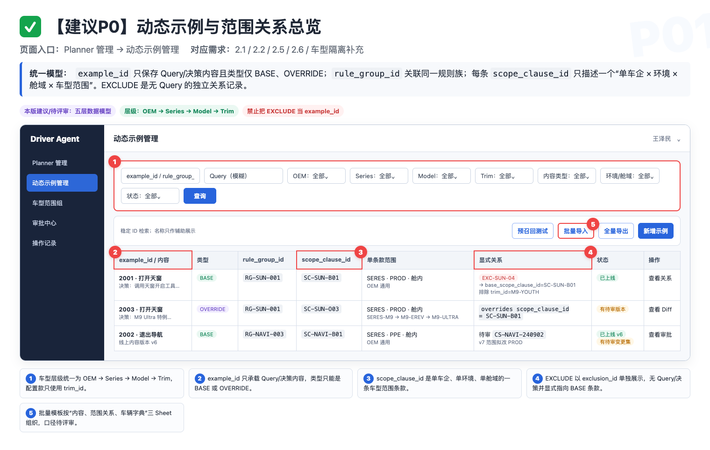
原型 P01｜列表增加四级车辆筛选、生效范围条款摘要、内容/关系类型、规则族与版本状态。点击图片查看原图。
8.2 ✅【建议 P0】新增 / 编辑动态示例
页面入口：动态示例管理 → 新增示例；列表 → 编辑。
需求背景：新增/编辑必须把内容和一个或多个单车企生效范围条款说清楚；不能用“车企多选 × 车型多选”生成无法解释的跨车企组合。
| 字段 | 新增 | 编辑 | 校验和联动 |
|---|---|---|---|
example_id | 提交并落库后生成 | 只读 | 内容记录稳定 ID，用户不可修改；外部单据可引用。 |
| Query | 必填 | 必填 | 去首尾空格；变化后旧查重结果立即失效。 |
| 决策分析 | 必填 | 必填 | 长文本；变化后必须重新提交检查。 |
| 其他说明 | 选填 | 选填 | 记录背景、边界和来源。 |
| 生效范围条款 | 至少 1 条 | 至少 1 条 | 每条款车企单选，独立配置环境、舱域和车辆范围，并由 scope_clause_id 稳定标识。 |
| 车辆范围 | 每条款必填 | 每条款必填 | oem_id/series_id/model_id/trim_id 四级级联；最细 ID 反查父链并校验冗余父 ID。 |
| 排除/覆盖 | 条件填写 | 条件填写 | EXCLUDE 是独立 exclusion_id 关系并填写 base_scope_clause_id；OVERRIDE 内容填写 overrides_scope_clause_id。 |
| 配置敏感 | 若采纳 D34 后必填/启用 | 若采纳 D34 后必填/启用 | 采纳后用于限制硬件敏感内容的 DYNAMIC 范围；未采纳前不作为强制校验。 |
| 继承模式 | 每条款必填 | 每条款必填 | SNAPSHOT 冻结审批时叶子 trim_id 集合；DYNAMIC 保存根节点并按当前字典解析未来子节点。 |
| 来源单号 | 本版建议 | 本版建议 | 保存 Meego/Bug ID 或链接，不重复上传验证截图。 |
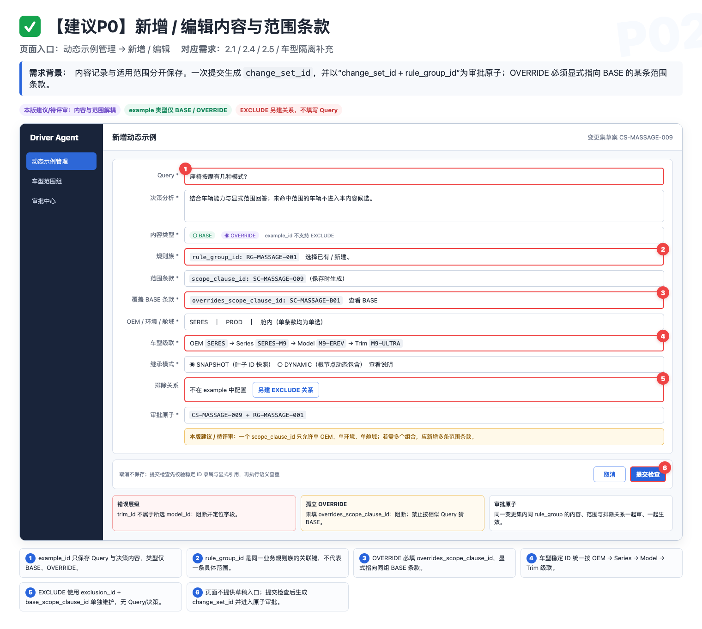
原型 P02｜表单增加生效范围条款摘要、车型范围和创建特例入口；配置敏感字段仅在采纳 D34 后启用。点击图片查看原图。
- 提交检查：先执行必填、长度、枚举和字段联动校验；全部通过后调用语义查重。
- 取消：无改动直接离开；有未保存内容时二次确认。
- 并发：编辑期间线上版本已变化时阻断保存，提示刷新后重新编辑。
- 查重失败：必须提示失败并允许重试，不能伪装成“没有相似项”；本版建议阻断继续提交，最终按 D02。
8.3 ✅【建议 P0】语义查重结果
触发入口：新增、编辑点击“提交检查”；批量导入进入校验报告。
需求背景：查重的目标是让人发现可复用条目，而不是用一个不透明阈值替用户做业务判断。
example_id/rule_group_id、生效范围条款、内容类型、显式关系和与当前范围交集。example_id、为完全相同内容新增 scope_clause_id，或从 BASE 条款创建显式 OVERRIDE；相似度不能自动建立 rule_group_id 或覆盖关系。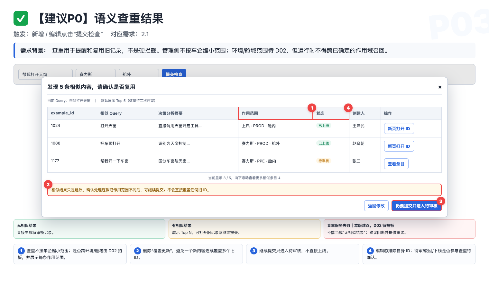
原型 P03｜Top N 只做提示，用户可复用旧条目、返回修改或仍要提交。点击图片查看原图。
| 状态 | 页面结果 | 能否继续 |
|---|---|---|
| 无相似结果 | 提示“未发现相似项”，生成待审核记录。 | 可以 |
| 有相似结果 | 展示 example_id/rule_group_id、Query、决策摘要、scope_clause_id、内容类型、显式覆盖/排除关系、范围交集、状态和创建人。 | 可以 |
| 查重失败 | 展示失败原因和重试入口。 | 本版建议不可以；最终按 D02 |
| 表单关键字段变化 | 旧结果标记失效，必须重新检查。 | 重新检查后可以 |
8.4 ✅【建议 P0】审批中心列表
页面入口：审批中心。
需求背景：审批记录不能混在动态示例正式列表里。提交人需要看到自己的结果，审核白名单需要按 change_set_id + rule_group_id 处理原子变更，不能把同一规则族拆成互相矛盾的多条独立审批。
| 用户 | 可见视图 | 数据范围 | 动作 |
|---|---|---|---|
| 普通提交人 | 我提交的 | 本人提交记录与结果 | 查看原因、修改后重提 |
| 审核白名单 | 待我审核 / 我提交的 / 全部记录 | 动态示例模块全量变更集 | 按规则族通过/驳回、批量处理多个互相独立的变更集 |
| 无模块权限用户 | 无 | 无 | 服务端禁止访问 |
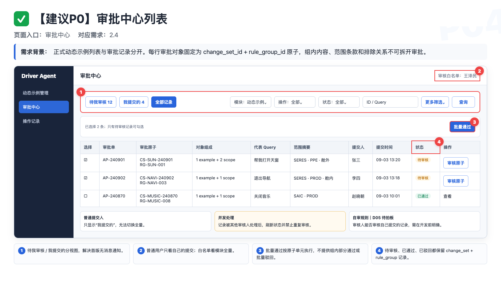
原型 P04｜审批中心区分“待我审核”和“我提交的”，并补充作用域、操作类型和批次信息。点击图片查看原图。
- 筛选包括模块、审批状态、操作类型、
change_set_id/rule_group_id/example_id、Query、提交人、车企、环境、舱域、车系、车型、配置款、关系类型、提交时间和批次号。 - 列表一行对应一个
change_set_id + rule_group_id；只有待审核变更集可勾选。支持批量通过多个彼此独立的变更集，不做批量驳回，因为驳回原因必须逐变更集填写。 - 审核人是否能处理自己提交的内容待拍板，未确认前页面需明确标记，不能默认放行。
- 记录被其他审核人处理时刷新状态并禁止重复审核；接口必须幂等。
- 范围扩大、删除条款/特例/排除关系显示高风险；批量通过前按规则族汇总受影响配置款数量。任意一人通过还是多人会签按 D24。
8.5 ✅【建议 P0】审批详情、版本 Diff 与驳回
页面入口：审批中心 → 审核 / 查看。
需求背景：审核人需要看到 change_set_id 提交时冻结的整个 rule_group_id 快照、修改前后差异和适用范围，不能审核一份在过程中已被修改的数据。
| 操作类型 | 必须展示 | 审核后的状态 |
|---|---|---|
| 新增 | 变更集内全部内容、条款、排除关系、相似示例、提交信息 | 通过后整个规则族成为线上 v1；驳回后全部不可见。 |
| 更新 | 当前线上规则族与待审规则族左右 Diff，变化字段高亮 | 建议旧规则族继续生效；通过后按 rule_group_id 原子替换，驳回后旧版不变。 |
| 删除 | 被删 example_id/scope_clause_id/exclusion_id 快照、关联和回退影响 | 删除策略待拍板；不得只删关系一侧或让规则族出现半更新。 |
| 车型范围变化 | 四级范围树、稳定 ID、SNAPSHOT 叶子集、字典版本、显式覆盖/排除关系、前后影响数量 | 通过后整个 change_set_id 原子切换；驳回后线上关系不变。 |
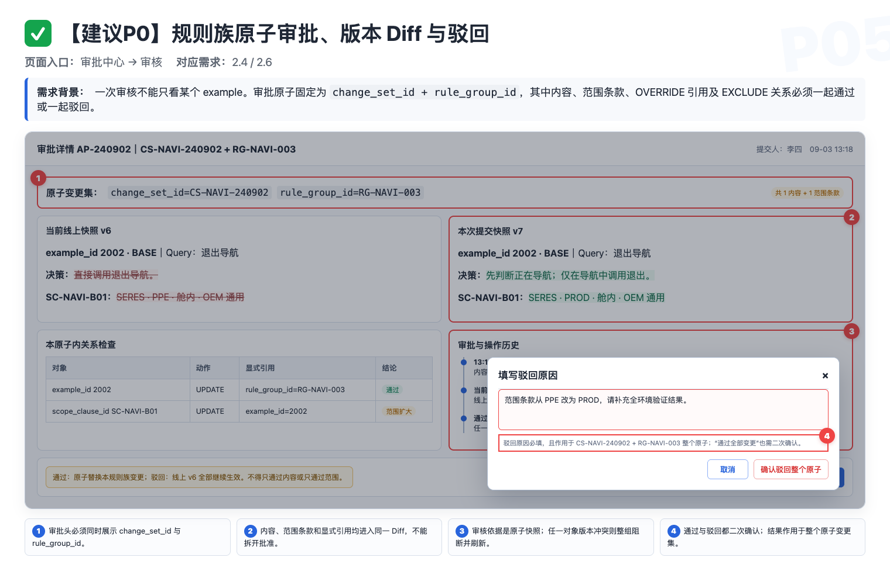
原型 P05｜更新审批左右对比线上版本与待审版本；驳回原因必填。点击图片查看原图。
- 通过前二次确认，并校验变更集仍为待审、同一
rule_group_id的线上基线版本未变化。 - 驳回原因必填且提交人可见；重提建议生成新审批单并关联上一单，不能覆盖历史。
- 出现并发版本冲突时阻断审批，提示刷新后重新审核。
- BASE、OVERRIDE 内容及其 SCOPE/EXCLUDE 关系必须纳入同一
change_set_id，按rule_group_id原子审批；不允许拆成数据 ID 级独立审批。
8.6 ✅【建议 P0】批量导入入口与上传
页面入口：动态示例管理 → 批量导入。
权限：首批仅王泽民、赵晓朝。
流程：下载模板 → 上传文件 → 生成校验报告 → 确认导入 → 查看结果。
example_operation | example_id / temp_example_key | Query / 内容 | 解释 |
|---|---|---|---|
ADD | example_id 为空；temp_example_key 必填 | 必填 | 写入成功后生成新 example_id；BASE/OVERRIDE 都是内容。 |
UPDATE | example_id 必填且存在 | 必填 | 按 ID 更新，查重时排除自身。 |
DELETE | example_id 必填且存在 | 可空 | 必须显式填写 example_operation=DELETE，并校验所属规则族全部关系。 |
example_operation 不是 DELETE 时，一律报必填错误，不能推断为删除。该安全口径需二次评审确认。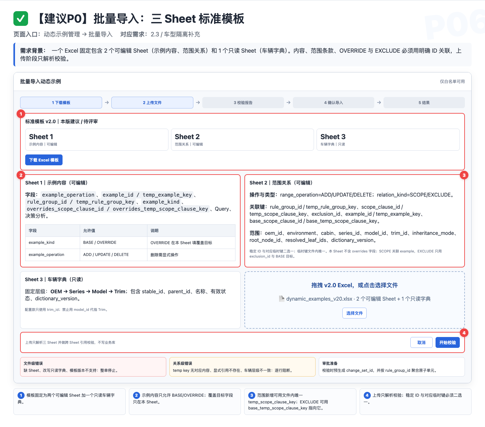
原型 P06｜固定模板、拖拽上传、解析状态与文件级错误提示。点击图片查看原图。
- 模板固定为 2 个可编辑 Sheet“示例内容、范围关系”+ 1 个只读 Sheet“车辆字典”；新增内容、规则族和 BASE 条款分别使用文件内唯一的
temp_example_key/temp_rule_group_key/temp_scope_clause_key。 - 范围关系 Sheet 用
range_operation=ADD/UPDATE/DELETE与relation_kind=SCOPE/EXCLUDE区分动作和关系；SCOPE 行保存scope_clause_id/temp_scope_clause_key，EXCLUDE 行保存exclusion_id并用base_scope_clause_id/base_temp_scope_clause_key指向 BASE。OVERRIDE 则只在“示例内容”Sheet 用overrides_scope_clause_id/overrides_temp_scope_clause_key指向 BASE。所有稳定 ID 与对应临时键均二选一；范围行完整带出继承模式、resolved_leaf_ids与dictionary_version。 - 车辆列必须拆为
oem_id/series_id/model_id/trim_id；最细 ID 可驱动父链反查，但同时填写的冗余父 ID 必须一致。model_id不能代替trim_id。 - 上传阶段只解析、校验，不写入新增、更新或删除。
- 缺列、模板版本不支持、文件无法解析或只读车辆字典被篡改属于文件级错误；车型父链、停用节点、同目标范围重叠、EXCLUDE/OVERRIDE 冲突、字典版本过期属于行级/关系级错误。
- 文件类型、大小和最大行数沿用现网约束；若无现网约束，由研发给出后回填，不在 PRD 擅自写数字。
8.7 ✅【建议 P0】批量校验报告
页面入口：批量导入 → 校验完成。独立全页为本版交互建议，会议尚未在弹窗与全页之间拍板，见 D28。
需求背景：校验报告既要告诉维护人“哪里错”，也要把相似提醒与阻塞错误分开，支持离线修正后重新上传。
example_id/temp_example_key、rule_group_id/temp_rule_group_key、scope_clause_id/temp_scope_clause_key/exclusion_id、四级父链、range_operation/relation_kind、问题字段、原因、Top N 和可确认状态。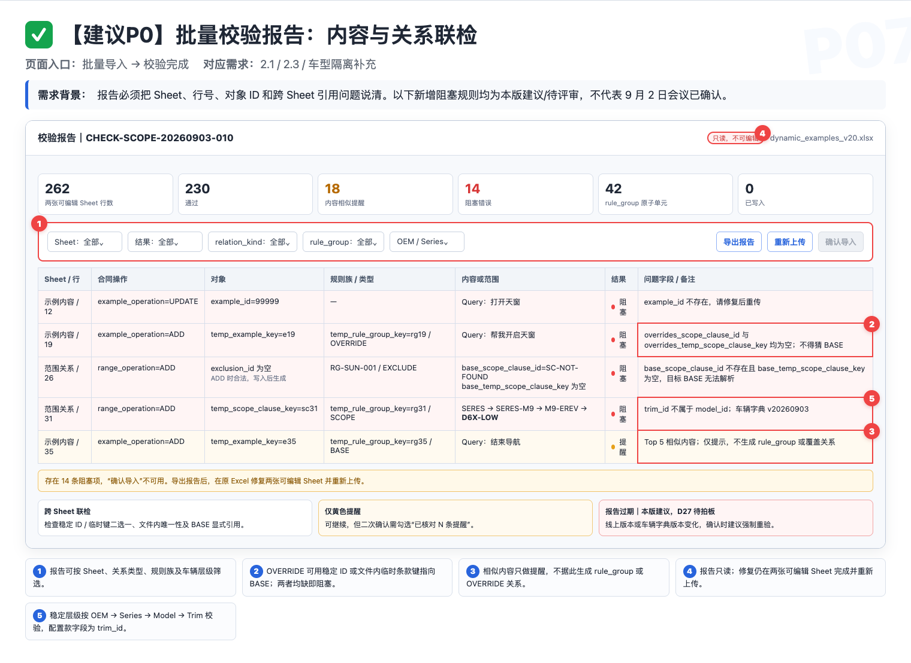
原型 P07｜汇总卡、筛选、逐行错误、相似提示、报告导出和确认按钮条件。点击图片查看原图。
8.8 ✅【建议 P0】确认导入与结果页
页面入口：校验无阻塞错误 → 确认导入。
需求背景：真正写库发生在“确认导入”，此前上传与校验都不能改变线上数据。
rule_group_id 展示内容与 range_operation 的新增/更新/删除、涉及配置款、范围扩大、OVERRIDE/EXCLUDE 变化；删除/扩大范围用高风险样式。rule_group_id 内必须原子写入；多个规则族整批原子还是允许按规则族部分成功仍待拍板。任一规则族不得出现半更新。change_set_id；是否允许白名单直接上线仍按 D04。change_set_id、回滚状态、待审核数、结果下载、返回列表和本批审批入口。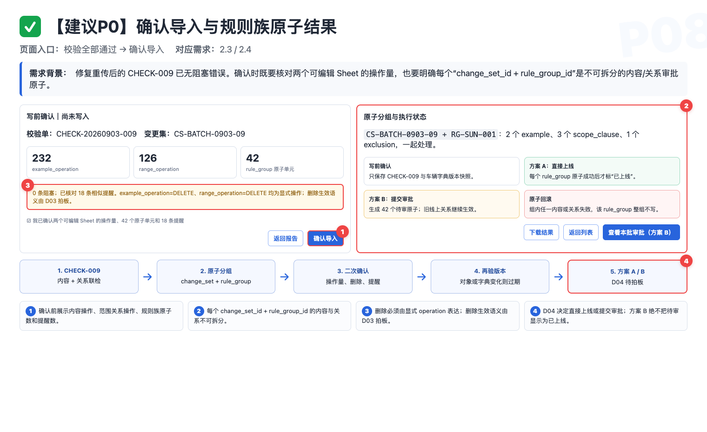
原型 P08｜写库前二次确认、执行状态以及成功/失败结果反馈。点击图片查看原图。
8.9 ✅【建议 P0】全量导出
页面入口：动态示例管理 → 全量导出。
权限：首批仅王泽民、赵晓朝；不走 Leader 审批。
需求背景：会议已确认白名单可直接导出，但“全量”究竟指筛选结果还是全库仍未定义。
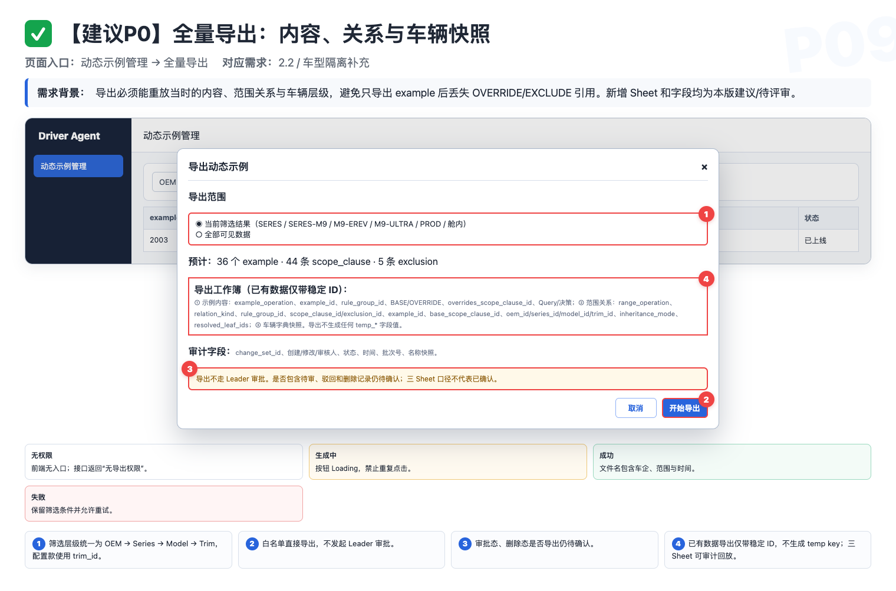
原型 P09｜导出范围二选一、固定全字段、数据量预览与白名单权限说明。点击图片查看原图。
| 范围选项 | 精确定义 | 待确认点 |
|---|---|---|
| 当前筛选结果 | 导出满足当前筛选条件的全部分页数据，不只当前页。 | 是否作为默认选项。 |
| 全部可见数据 | 忽略列表筛选，导出当前账号权限可见的全部数据。 | 是否包含待审、驳回和已下线记录。 |
- 固定全字段；车型上线后导出与导入同构的三 Sheet，完整保留
example_id/rule_group_id/scope_clause_id/exclusion_id、四级 ID、继承模式、resolved_leaf_ids和字典版本；其中overrides_scope_clause_id位于“示例内容”Sheet，base_scope_clause_id位于“范围关系”Sheet。已落库数据导出时使用稳定 ID，对应临时键列留空。 - 默认“配置关系导出”必须可无损回灌，能够单独更新/删除一个条款或排除关系；“配置款生效结果”只用于核对，不直接回灌。
- 导出中按钮 Loading；失败时保留范围和筛选条件并允许重试；无数据时给明确提示。
- 日志记录操作人、时间、筛选条件、条目数和结果；非白名单接口调用明确拒绝。
8.10【建议范围】操作记录与批次详情
页面入口：动态示例详情 → 操作记录；批次号 → 批次详情。
需求背景：责任可追溯目标已确认，但本期是否必须建设用户可见页面仍待确认。即使页面后置，后端字段与快照仍需留存。
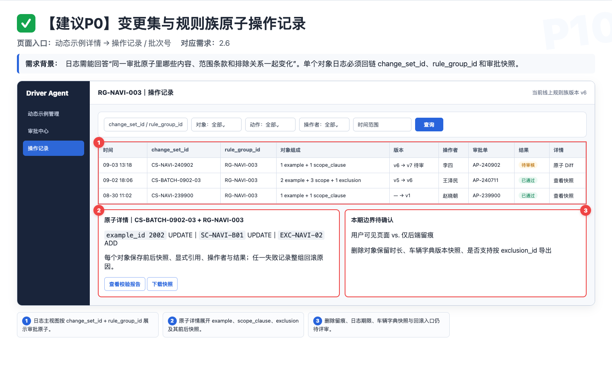
原型 P10｜按数据、动作、人员和批次检索；支持单条 Diff 与批次级追溯。点击图片查看原图。
change_set_id/rule_group_id/example_id/scope_clause_id/exclusion_id、动作、前后快照、操作者、时间、批次号、审批结果；车型快照保存四级 ID、操作时名称、叶子集、字典版本和显式关系。change_set_id 并原子落地，操作者必须是真实人员，不能统一写 system。8.11【建议方案】车企 × 环境 × 舱域 × 车型隔离
适用链路：运行时动态示例召回。
需求背景：平台保存范围字段只是第一步；检索侧必须按同一车辆上下文应用作用域、排除和显式特例，再做语义召回。
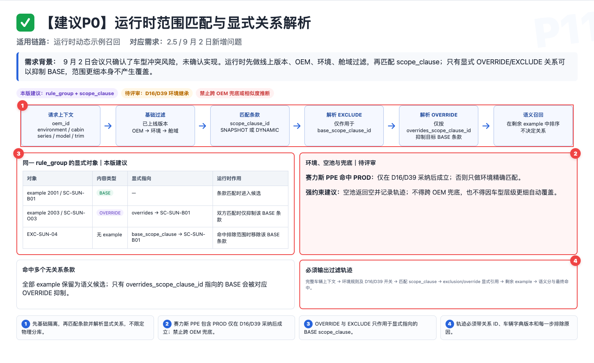
原型 P11｜先选正确候选池，再做语义召回；平台、检索、迁移和监控必须成套交付。点击图片查看原图。
oem_id/环境/舱域series_id/model_id/trim_id匹配 scope_clause_id
冲突则规则族不注入
精确度只选命中证据
| 请求 | 允许命中 | 禁止命中 |
|---|---|---|
| 赛力斯 + PPE + 舱内 | 赛力斯舱内 PPE；若 D16/D39 采纳，再允许赛力斯舱内 PROD | 赛力斯舱外；上汽全部；未拍板前不得默认把 PROD 加入 PPE |
| 赛力斯 + PPE + 舱外 | 赛力斯舱外 PPE；若 D16/D39 采纳，再允许赛力斯舱外 PROD | 赛力斯舱内；上汽全部；未拍板前不得默认把 PROD 加入 PPE |
| 上汽 + PPE | 上汽对应 PPE；上汽 PROD；是否还按舱域过滤由 D13 决定 | 赛力斯全部 |
| 上汽 + D6X + T1 | 匹配的 BASE 与 T1 OVERRIDE 内容；T1 EXCLUDE 关系只移除 base_scope_clause_id 指向的 BASE 条款 | 其他车系特例；被 overrides_scope_clause_id 显式覆盖的 BASE 条款 |
上线前置条件【本版建议】
- 确认环境、舱域及
oem_id/series_id/model_id/trim_id的来源、父链和字典版本； - 完成存量分类、映射、影子对比与兼容规则；
- 平台字段、审批 Diff、批量模板和运行时过滤共同上线；
- 用目标配置款、兄弟配置款、其他车系、其他车企四组结果验收；
- 监控缺失路由、非法父链、空池、同层冲突和疑似串池。
8.12 ✅【建议 P1】车型生效范围条款选择器
页面入口：新增/编辑动态示例 → 生效范围条款 → 配置车辆范围。
需求背景：一个内容可以复用于多个车企，但每个车企必须独立描述环境、舱域和车型范围，不能形成笛卡尔积。
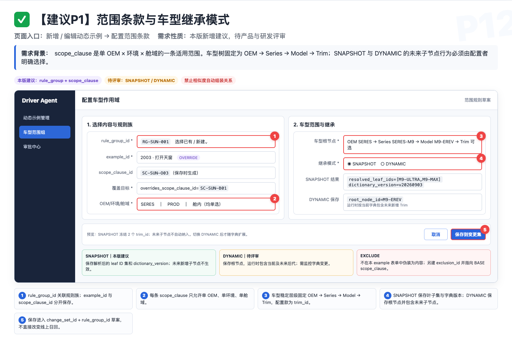
原型 P12｜单车企生效范围条款、四级车辆树、稳定 ID、SNAPSHOT/DYNAMIC 继承与叶子集预览。点击图片查看原图。
scope_clause_id，独立选择车企、环境、舱域和车辆范围；同一 example_id 可添加多条。model_id 与 trim_id 分列，不混用。exclusion_id，通过 base_scope_clause_id 指向 BASE 条款。trim_id 集 + dictionary_version；DYNAMIC 保存根节点，按当前字典解析未来子节点。8.13 ✅【建议 P1】车型特例与覆盖关系确认
页面入口：提交检查后的范围冲突提示；详情 → 创建车型特例。
需求背景：相似 Query 不能自动代表覆盖关系。需要明确哪条车型特例只在什么范围内替换哪条通用规则。
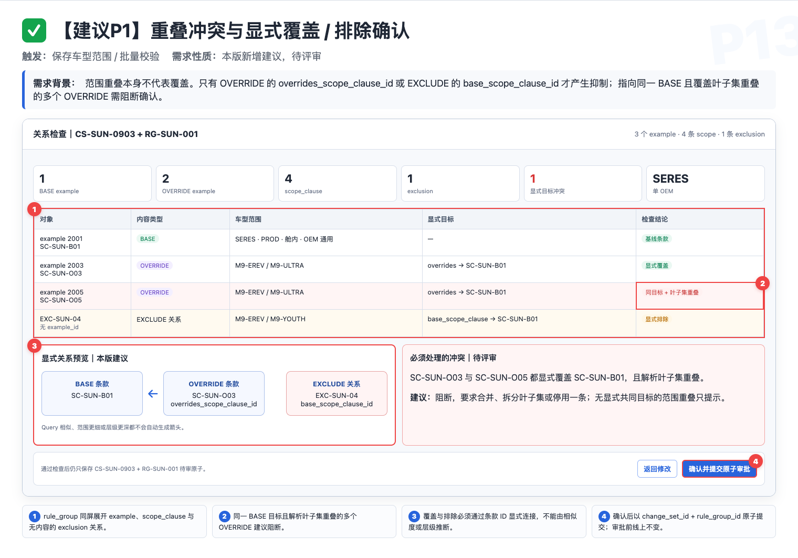
原型 P13｜rule_group_id、目标 BASE 条款、范围交集、OVERRIDE/EXCLUDE 冲突与最终生效预览。点击图片查看原图。
- 用户可以返回调整范围、为旧内容新增条款，或创建 OVERRIDE；创建特例必须选择 BASE 的
scope_clause_id，保存为overrides_scope_clause_id。 - v10 建议 OVERRIDE 只能指向 BASE；同一目标 BASE 条款上，OVERRIDE 与 OVERRIDE 不得范围重叠，OVERRIDE 与 EXCLUDE 也不得重叠。
- 底部预览显示：保留的通用内容、被特例屏蔽的 BASE 条款、命中的
exclusion_id和跨范围排除原因。 - 来源下线、范围无交集、指向 OVERRIDE 或重叠冲突时发布阻断；若线上遗留冲突，整个
rule_group_id不注入并告警，不允许用“最新一条优先”。
8.14 ✅【发布前置 P0】存量车型范围迁移
页面入口：动态示例管理 → 范围迁移 / 上线检查。
需求背景：如果直接开启严格车型过滤，旧记录可能全部漏召回；如果把空值当成全车型，又会继续污染。必须先分类、映射、影子对比和灰度。
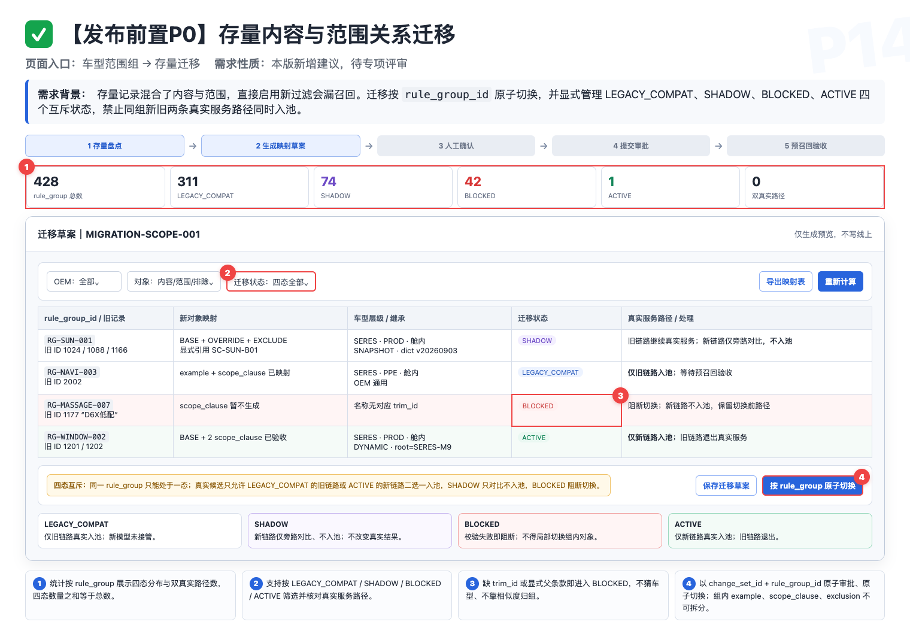
原型 P14｜按 rule_group_id 展示 LEGACY_COMPAT、SHADOW、BLOCKED、ACTIVE，完成唯一入池路径与原子切换。点击图片查看原图。
- 存量先分通用、无法判断；若采纳 D34，再启用配置敏感分类。保留原
example_id，补齐rule_group_id，迁移只改条款/关系，不改 Query 和决策。 - 原多车企标签拆为多个单车企
scope_clause_id；若采纳 D34，配置敏感或无法判断记录不得自动设为全部车型。 - LEGACY_COMPAT 仅旧路由入池；SHADOW 新路由只旁路计算；BLOCKED 禁止切换；ACTIVE 仅新路由入池。任何状态都不允许新旧双入池。
- 未达到 D38 的迁移覆盖率和回归门槛时不能生成 ACTIVE 切换；审批通过后以
change_set_id + rule_group_id原子关闭旧路由并开启新路由。
8.15 ✅【建议 P1】车型范围预召回测试
页面入口：动态示例管理 → 预召回测试。
需求背景：仅看最终回答无法判断是作用域无候选、被特例覆盖，还是语义未召回。诊断页需使用与线上一致的过滤逻辑并给出排除原因。
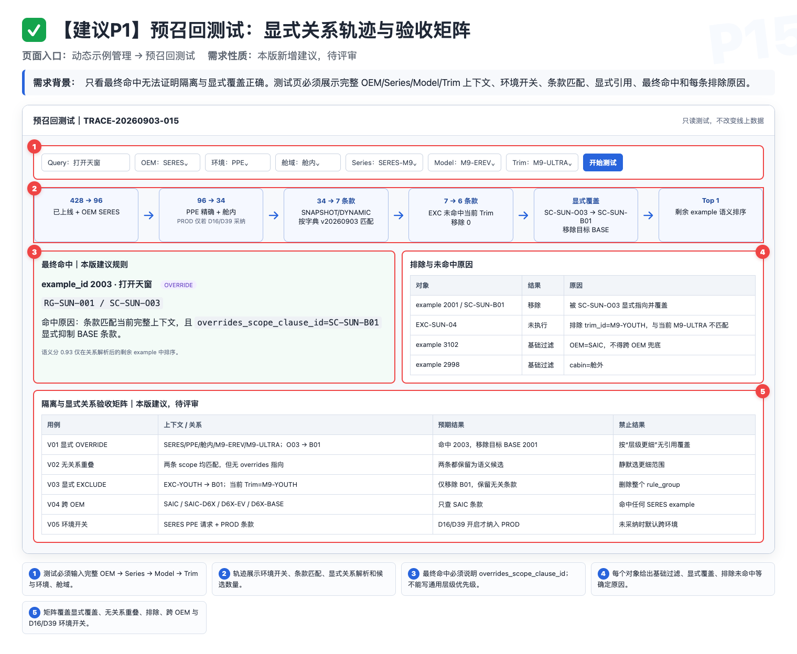
原型 P15｜完整车辆上下文、逐步过滤轨迹、最终命中、覆盖关系和被排除原因。点击图片查看原图。
oem_id/series_id/model_id/trim_id；最细 ID 反查父链并实时校验冗余父 ID。example_id 去重和语义召回各步数量，区分范围为空与语义未命中。rule_group_id/example_id/scope_clause_id、继承模式、BASE/OVERRIDE 和显式来源；层级精确度只解释同一示例的条款证据。exclusion_id、被显式 OVERRIDE、规则族冲突和语义未达条件分别说明。9发布、验收与待拍板项
9.1 建议发布拆分
第 1 批：管理闭环
R01–R04、R07：相似提示、审批列表、批量导入/导出、操作记录。
交付后先解决重复录入和人工批量维护问题。
第 2 批：范围隔离
R05–R06：车企/渠道、环境、赛力斯舱内/舱外及运行时过滤。
必须平台与检索侧共同上线，不能只发一个字段。
第 3 批：车型/配置款隔离
R08：四级车辆字典、example_id/rule_group_id/scope_clause_id/exclusion_id、BASE/OVERRIDE 内容与 EXCLUDE 关系、三 Sheet 批量（2 个可编辑 + 1 个只读）、原子审批、迁移、运行时和预召回成套交付。
先专项拍板 D21、D22、D29–D40；不得只增加页面字段。
9.2 验收用例
| ID | 验收动作 | 预期 | 责任边界 |
|---|---|---|---|
| A01 | 单条提交一个与库内语义相近的 Query | 展示 Top N；可打开旧 ID，也可继续提交，不被硬拦截。 | 产品定义 Case，研发提供环境，测试执行。 |
| A02 | 相似旧条目属于另一车企标签 | 管理侧仍提示并展示范围；运行时不会因此跨车企召回。 | 管理/运行两条链路分别验收。 |
| A03 | 普通用户提交一个新规则族 | 生成 change_set_id + rule_group_id 并进入待审核；变更集内内容与关系均不在线上可见，通过后原子生效。 | 审核白名单执行审批。 |
| A04 | 驳回一条提交 | 提交人能在自己的审批记录中看到原因，修改后可重提。 | 首版不要求飞书通知。 |
| A05 | 批量上传 2 个可编辑 Sheet + 1 个只读车辆字典，含内容与范围关系的新增、更新、删除 | 上传阶段不写库；能识别 example_operation 与 range_operation，报告区分错误与相似提醒。 | 白名单管理员操作。 |
| A06 | Query 为空但 example_operation 不是 DELETE | 报必填错误，不执行删除。 | 需先拍板 D03。 |
| A07 | 导出校验报告、离线修复并重新上传 | 报告字段完整，可筛选；修复后通过并可确认导入。 | 前端导出页面数据。 |
| A08 | 非白名单尝试全量导出 | 入口不可用或明确提示无权限；白名单可直接导出，无 leader 审批。 | 权限配置由研发维护。 |
| A09 | 同一通用内容分别增加上汽、赛力斯两条单车企生效范围条款 | 只维护一个 example_id、生成两个 scope_clause_id；两边在各自条款范围内可召回。 | 需确认内容确实通用。 |
| A10 | 在赛力斯舱内配置安全、可逆且结果明显的冲突示例 | 赛力斯舱内得到结果 A；赛力斯舱外保持基线 B。 | 产品出 Case，研发配置，测试验证。 |
| A11 | 同一冲突示例验证上汽目标环境 | 上汽保持基线 B，不出现赛力斯结果 A。 | 证明没有跨车企泄漏。 |
| A12 | 目标车企/舱域示例池为空 | 按二次评审确认的空池策略处理；若采纳本版建议，则返回空并记录监控。 | 决策依赖型验收。 |
| A13 | 尝试在同一生效范围条款选择上汽与赛力斯，或给上汽条款填赛力斯专属 PPE | 同一条款不提供车企多选；导入脏数据时阻断。专属 PPE 与条款车企不一致时阻断并提示拆成独立条款。 | 条款联动验收。 |
| A14 | 查重接口超时或失败 | 页面明确失败并提供重试，不能伪装成“无相似结果”；若 D02 采纳本版建议，则阻断继续提交。 | 决策依赖型验收。 |
| A15 | 编辑已上线规则族 v6 并提交 v7 | 若采纳版本模型，审批期间继续读取 v6；通过后以 change_set_id + rule_group_id 原子切换到 v7。 | 审批与检索联合验收。 |
| A16 | 规则族待审 v7 被驳回后查询同一 Query | 线上仍命中 v6；变更集内内容、条款和排除关系均未部分生效，提交人能看到驳回原因并重提。 | 审批版本验收。 |
| A17 | 批量文件缺少整列 example_operation 或 range_operation | 文件级失败，整单停止，不生成可确认报告。 | 批量解析验收。 |
| A18 | 同一文件中同一 ID 同时更新和删除 | 若 D27 采纳文件内互查建议，则报阻塞错误并同时指出冲突行号。 | 决策依赖型验收。 |
| A19 | 校验通过后目标 ID 被其他人修改 | 若 D27 采纳校验快照建议，则确认导入时提示报告过期并要求重新校验。 | 决策依赖型验收。 |
| A20 | 批量写入某个规则族时发生服务端失败 | 该 rule_group_id 全部回滚；多个规则族是否整批回滚按 D08，但任何规则族内不得部分成功。 | 事务与原子边界验收。 |
| A21 | 导出当前筛选结果 | 导出全部分页数据而非当前页；是否同时保留全库导出按评审结论。 | 导出范围验收。 |
| A22 | 环境为 prod 的赛力斯舱内示例 | 仅若 D16/D39 采纳赛力斯沿用现有 PROD 语义与优先级，才在赛力斯各环境可见；始终不得进入赛力斯舱外或上汽。 | 决策依赖型验收。 |
| A23 | 非白名单直接调用批量导入接口 | 后端拒绝并记录权限错误。 | 不能只测前端入口。 |
| A24 | 存量记录没有舱域值 | 按迁移方案处理，不允许上线后出现全量召回为空或跨池污染。 | 上线前迁移验收。 |
| A25 | 两名审核白名单对同一 change_set_id 先后操作 | 按 D24 的单人/多人审批规则只产生一个有效结论；同一 rule_group_id 的内容与关系只原子切换一次。 | 审批状态机验收。 |
| A26 | 批量通过时其中一个变更集已被其他人处理 | 按 D25 处理其他互相独立的变更集，页面列出成功、失效和未处理项；不得拆开一个规则族。 | 并发批量审批验收。 |
| A27 | 审批功能上线前抽取一条既有线上记录 | 按 D26 初始化线上 v1，不要求重新审批且召回不中断；迁移审批记录按最终方案。 | 存量版本迁移验收。 |
| A28 | BASE 内容有一个 OEM 级 scope_clause_id，无显式特例/排除 | 按该条款的 SNAPSHOT 或 DYNAMIC 规则匹配；不得因其他无关细粒度示例而被覆盖。 | 条款匹配基础验收。 |
| A29 | 某车系从 BASE 条款创建 OVERRIDE 内容 | 新 example_id 与 BASE 同属 rule_group_id，并以 overrides_scope_clause_id 指向 BASE；仅特例范围屏蔽该 BASE。 | 显式覆盖来源验收。 |
| A30 | 某配置款 trim_id 创建 OVERRIDE | 只屏蔽显式关联的 BASE 条款；同车型其他配置款及其他 example_id 不受影响。 | model_id/trim_id 分离验收。 |
| A31 | 为某配置款新增 EXCLUDE | 创建无 Query 的 exclusion_id 并填写 base_scope_clause_id；仅该范围不使用目标 BASE。 | 排除关系验收。 |
| A32 | 另一无关规则也有相似 Query | OVERRIDE/EXCLUDE 只影响显式关联的 BASE 条款，不按相似度或层级精确度全局屏蔽。 | 防误伤验收。 |
| A33 | 同一目标 BASE 范围出现双 OVERRIDE，或 EXCLUDE/OVERRIDE 重叠 | 发布前阻断并列出关系 ID 与冲突叶子集；模拟线上遗留冲突时整个 rule_group_id 不注入并告警。 | 配置冲突验收。 |
| A34 | 通过 range_operation=DELETE 删除配置款 OVERRIDE 的条款 | 审批前展示删除后恢复的 BASE；通过后按规则族原子生效，其他条款不丢失。 | 单一范围删除验收。 |
| A35 | 通过 range_operation=DELETE 删除一个 exclusion_id | 审批前展示重新继承的 BASE 和影响数量；仅删除目标排除关系。 | 单一排除删除验收。 |
| A36 | 请求缺配置款但有车型 ID | 不猜配置款，只使用允许在车型或更高层级生效的规则。 | 缺参降级验收。 |
| A37 | 请求带合法 trim_id 但冗余 model_id 错误，或父链无法反查 | 识别为非法路由，不回退到兄弟配置款；记录冲突字段并按 D30 处理。 | 父链反查验收。 |
| A38 | 新配置款加入 SNAPSHOT 车系 | 审批快照中的叶子 trim_id 集合和 dictionary_version 不变，新配置款不自动继承并进入待治理。 | 快照持久化验收。 |
| A39 | 新配置款加入 DYNAMIC 根节点 | 运行时按当前字典解析根节点并包含新 trim_id，同时保留提交字典版本审计；若采纳 D34，配置敏感内容按高风险/禁用规则处理。 | 动态继承验收。 |
| A40 | 上汽配置款 ID 填入赛力斯生效范围条款 | 单条和批量均阻断，指出正确车企和父链。 | 跨车企脏数据验收。 |
| A41 | 同一 example_id 的父级与叶子条款同时命中 | 先完成条款匹配，再按 example_id 去重；层级精确度只选诊断证据，不影响其他内容。 | 去重顺序验收。 |
| A42 | 同一规则在赛力斯当前 PPE 与 PROD 可见 | 仅若 D16/D39 采纳，才按已拍板优先级产生一个有效 example_id 并解释条款来源；否则不得默认命中 PROD。 | 环境继承验收。 |
| A43 | 同批导入同一 rule_group_id 的 BASE/OVERRIDE 内容及 EXCLUDE 关系，其中一行失败 | 该规则族全部不生效，线上继续使用旧关系；不得只导入成功行。 | 规则族原子事务验收。 |
| A44 | 导出三 Sheet 后不修改重新导入 | 所有稳定 ID、显式来源、四级父链、继承模式、SNAPSHOT 叶子集和字典版本不丢失；结果无语义变化。 | 无损回灌验收。 |
| A45 | 存量规则族从 LEGACY_COMPAT 进入 SHADOW 再到 ACTIVE | SHADOW 仅记录新结果；审批通过后按 rule_group_id 原子切换，任何时刻只有旧或新一套结果入池。 | 迁移状态机验收。 |
| A46 | 存量配置敏感/范围未知规则 | 进入 BLOCKED；未迁移时保持 LEGACY_COMPAT 唯一路由，不自动扩成全部配置款。配置敏感字段是否启用依 D34。 | 迁移安全验收。 |
| A47 | 修改车企级 BASE 规则族 | 审批页按 change_set_id 展示内容、条款、叶子集和影响数量；已有 OVERRIDE/EXCLUDE 不被静默覆盖，全部原子切换。 | 规则族 Diff 验收。 |
| A48 | 同 Query 同时存在 BASE 与配置款 OVERRIDE 内容 | 管理侧提示相似；运行时 OVERRIDE 只屏蔽 overrides_scope_clause_id 指向的 BASE 条款，其他内容保留。 | 查重与运行解耦验收。 |
| A49 | 预召回测试输入完整四级车辆上下文 | 展示父链校验、条款匹配、显式关系、按 example_id 去重、最终命中与排除 ID，结果与线上一致。 | 诊断页验收。 |
| A50 | 车型 QA 与动态示例出现已证实冲突 | 保存车辆层级 ID、QA 内容、示例 ID 和过滤轨迹，按 D22 处理。 | 跨模块冲突验收。 |
| A51 | 仅用“座椅按摩”未确认 Case 验收 | 标记证据不足，不能据此判定车型隔离成功或失败。 | 证据边界验收。 |
9.3 隔离验收记录模板
| Query | oem_id | series_id | model_id | trim_id | 环境 | 舱域 | rule_group / 条款 / 关系 ID | 原基线 | 目标 | 配置人 | 验证人 | 实际 | 结论 |
|---|---|---|---|---|---|---|---|---|---|---|---|---|---|
| 安全冲突 Case | 目标 OEM | 目标车系 | 目标车型 | 目标配置款 T1 | 目标环境 | 目标舱域 | 填写 rule_group_id、scope_clause_id、override/exclusion ID | B | A/空 | 研发/平台 | 测试 | 待填 | 通过/失败/证据不足 |
| 同一 Query | 同 OEM | 同车系 | 同车型 | 兄弟配置款 T2 | 同上 | 同上 | 继承 BASE 条款 | B | B | — | 测试 | 待填 | 通过/失败/证据不足 |
| 同一 Query | 同 OEM | 其他车系 | 已确认车型 | 已确认配置款 | 同上 | 同上 | 不在特例范围 | B | B | — | 测试 | 待填 | 通过/失败/证据不足 |
| 同一 Query | 其他 OEM | 对应车系 | 对应车型 | 对应配置款 | 尽量同级 | 对应舱域 | 跨 OEM 不匹配 | B | B | — | 测试 | 待填 | 通过/失败/证据不足 |
9.4 二次评审必须拍板
- D01｜Top N 数量：单条和批量统一取 3 条还是 5 条？建议默认 5，后台可配，页面不暴露阈值。
- D02｜查重范围与失败策略：单条编辑、批量新增/更新是否全部查重？除车企外是否跨环境、跨舱域？待审核、已驳回、已下线是否参与？完全相同 Query 是否仍只提示？失败时是否阻断？
- D03｜删除语义：是否接受“示例内容用
example_operation=DELETE、范围关系用range_operation=DELETE”作为唯一删除标识？内容删除最终是物理删除、转已下线，还是提交删除审批？ - D04｜批量导入与审批：确认导入是否等同审批通过？若进入审批，是否确认按
rule_group_id生成一个change_set_id，批次仅负责汇总多个变更集而不拆成每行审批？ - D05｜审核自审：审核人能否审核自己提交的内容？
- D06｜审批版本模型：已上线条目修改或申请删除期间，旧版本是否继续生效？本版建议继续生效，直到新版本通过。
- D07｜修改再审：修改 Query、决策分析或扩大作用范围后是否强制重新审批？建议强制。
- D08｜批量事务：一个
rule_group_id内固定原子成功/失败；多个规则族组成的整批，是全部原子还是允许按规则族部分成功？ - D09｜批次与报告：校验单号、正式批次号分别何时生成？报告保存多久？
- D10｜导出“全量”定义：当前筛选结果的全部分页数据，还是忽略筛选导出全库？是否包含待审、驳回、已删除数据？
- D11｜车企与环境联动：是否确认每条
scope_clause_id只选一个车企和一个环境，同一内容用多条款覆盖多车企；专属 PPE 必须与条款车企一致，旧多车企标签迁移时逐条拆分？ - D12｜ALL 语义：是否需要 ALL？是否与具体车企互斥？是否自动覆盖未来新增车企？
- D13｜舱域字段：正式名称是什么？单选、多选还是允许通用？只对赛力斯展示还是所有车企必填？
- D14｜空池与缺失路由：目标池为空、请求缺少舱域或值非法时，返回空、兼容旧逻辑还是使用默认值？
- D15｜上层路由信号：舱内/舱外给平台和检索侧的稳定标识及枚举是什么？由郝晓伟、李明骏补充。
- D16｜赛力斯环境枚举：有哪些测试环境？切到 PROD 后是否沿用“所有环境可见”？
- D17｜作用域存量迁移：现有记录如何补车企和舱域，空值过渡期如何处理，前端、检索和迁移按什么顺序上线？
- D18｜操作记录页面：本期只做后端留痕，还是同步做用户可见的日志和批次详情？
- D19｜批次回滚：当前飞书 v1.1 目标仍写“可回滚”。本期做、后续做，还是同步删除原目标？
- D20｜创建与编辑权限：谁能新增？普通用户能否编辑别人创建或已上线的记录？
- D21｜车型粒度与术语：车企、车系、车型、配置款的正式定义是什么？D6X、220 智享版分别属于哪一级？运行时最细能稳定拿到哪一级？
- D22｜跨模块冲突优先级：车型 QA 或结构化配置明确“本车无此配置”时，是否覆盖通用动态示例？是否按内容类型区分？
- D23｜审批平台化：何时把 TCC 白名单升级为 Trigger、Agent 也可复用的角色权限与审批中心？
- D24｜审批通过机制：任意一名白名单审核人通过即生效，还是需要两人都通过？一人驳回后是否立即终止审批？
- D25｜批量审批并发：批量通过时若部分
change_set_id已被处理，其他互相独立的变更集继续还是整批停止？任何情况下都不得拆分一个规则族变更集。 - D26｜审批版本存量迁移：既有线上记录是否统一初始化为线上 v1？是否补生成迁移审批单？切换期间如何保证召回不中断？
- D27｜批量文件内冲突与校验快照：同一文件的重复 ID 操作如何阻塞？确认导入前是否必须比较线上版本并让旧报告过期？
- D28｜校验报告承载形态：采用独立全页还是弹窗？本版原型建议全页，以支持百行级筛选和报告导出。
- D29｜车型主数据源：权威车辆字典由谁提供？稳定 ID、父级 ID、停用状态、字典版本和同步 SLA 是什么？
- D30｜车型路由缺参与非法值：缺少车系/车型/配置款或父链非法时，允许使用到哪一级通用规则？整体空池如何降级？
- D31｜对象与稳定 ID 模型：是否采纳“内容
example_id（仅 BASE/OVERRIDE）+ 业务规则族rule_group_id+ 单车企生效范围条款scope_clause_id+ 无 Query 排除关系exclusion_id”？一条内容能建多少条款？ - D32｜显式特例和排除约束：是否确认 OVERRIDE 必填
overrides_scope_clause_id且只可指向 BASE；EXCLUDE 必填base_scope_clause_id；同一目标范围双 OVERRIDE 或 EXCLUDE/OVERRIDE 重叠一律阻断，遗留线上冲突时整个规则族不注入并告警？ - D33｜继承模式持久化：是否确认 SNAPSHOT 保存审批时解析的叶子
trim_id集与dictionary_version，DYNAMIC 保存根节点并按当前字典解析未来子节点？两种模式的默认值、最大叶子数和字典变更告警阈值是什么？ - D34｜配置敏感规则：是否启用并设为必填？若采纳，哪些内容必须标记并细化到车型/配置款，是否默认禁用 DYNAMIC、由谁专项审核？未采纳前该字段不得被写成现网必填。
- D35｜原子变更集与审批：是否确认一个
change_set_id只对应一个rule_group_id，包含该规则族全部内容/条款/排除 Diff，并以规则族为最小原子审批、批量写入和迁移切换单位？ - D36｜批量模板：是否确认 2 个可编辑 Sheet“示例内容、范围关系”+ 1 个只读“车辆字典”？
example_operation/range_operation/relation_kind、temp_example_key/temp_rule_group_key/temp_scope_clause_key及两类目标临时引用、稳定关系 ID、四级车辆 ID、继承模式、快照叶子集与字典版本的列约束和上限是什么？ - D37｜导出与无损回灌：是否确认默认导出与三 Sheet 导入同构，能单独更新/删除一个
scope_clause_id或exclusion_id且所有显式关系不丢失；配置款生效结果仅作为只读诊断？ - D38｜迁移状态与启用门槛：LEGACY_COMPAT、SHADOW、BLOCKED、ACTIVE 的进入/退出条件是什么？覆盖率、影子差异和回归达到什么阈值后，才允许按
rule_group_id原子关闭旧路由并开启新路由，确保永不新旧双入池？ - D39｜环境条款与去重：赛力斯 PPE 是否允许命中 PROD、若允许优先级是什么？条款匹配后是否统一按
example_id去重，并确认层级精确度只选择同一示例的命中证据、不覆盖无关内容？ - D40｜预召回测试：诊断页是否纳入车型隔离首发？是否必须展示父链校验、
scope_clause_id匹配、显式关系、规则族冲突、example_id去重与最终召回轨迹；谁可见、结果保存多久、能否导出到 Meego？
9.5 需求追溯
| 需求 | 原始讨论位置 | 本版处理 |
|---|---|---|
| 相似提示而非硬拦截 | 8/12 00:46:32–00:50:36 | R01、7.2、7.3 |
| 审批白名单与独立审批记录 | 8/12 00:11:42–00:20:40 | R02、7.4 |
| 导出仅限白名单、无需 leader 审批 | 8/12 00:20:47–00:22:51 | R04、7.6 |
| 一条通用内容覆盖多个车企、环境单选 | 8/12 00:22:51–00:30:22 | R05、7.1；v10 以多条单车企生效范围条款表达，避免笛卡尔积 |
| 批量导入、校验报告、离线修改 | 8/12 00:30:27–00:41:42 | R03、7.5 |
| 不在平台重复放验证截图 | 8/12 00:52:09–00:53:25 | 4.2 非目标、字段表 |
| 赛力斯舱内/舱外两套示例 | 后续群聊截图 | R06、7.1、A10–A12 |
| 车型/配置差异风险 | 9/2 00:01:22–00:10:27 | R08、7.8、D21–D22 |
| 四级车辆层级、内容/规则族/条款/排除关系、原子审批、迁移和预召回 | v10 产品建议 | 7.8、P12–P15、A28–A51、D29–D40；不是 9/2 已拍板结论 |
本页填完并将确认结果回填飞书后，v1.3 才可从“待二次评审”升级为“已确认需求”。
结论 / 日期
结论 / 日期
结论 / 日期
结论 / 日期